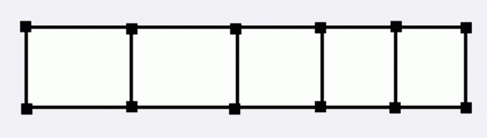

有一个神秘好人跟Bdcxq玩一个游戏，如果Bdcxq成功完成了这个游戏，那么他将会得到一件礼物。
这个游戏是这样的：
有一个梯子形的图如下，每条边都有一个权值。

然后神秘好人会做这样的事情：
1．神秘好人会修改某条边的权值；
2．神秘老人会问你从一个点走到另一个点所需经过边权和最小的权值和。
如果Bdcxq一直能答对问题，那么他就完成了游戏，也能得到礼物。
现在他请你编一个程序来帮他完成游戏。
| F.A.Qs | Home | Discuss | ProblemSet | Status | Ranklist | Contest | 入门OJ | ModifyUser Xeonacid | Logout | 捐赠本站 |
|---|
然后神秘好人会做这样的事情：
1．神秘好人会修改某条边的权值；
2．神秘老人会问你从一个点走到另一个点所需经过边权和最小的权值和。
如果Bdcxq一直能答对问题，那么他就完成了游戏，也能得到礼物。
现在他请你编一个程序来帮他完成游戏。
输入文件的第一行包含一个整数N，表示梯子总共含有2N个点，第一行从左至右分别标号为1，3，……，2N-1，第二行从左至右分别标号为2，4，……，2N。
接下来有三行。
第一行有N-1个整数，依次表示上层相邻两点间的初始权值。
第二行有N个整数，依次表示两层之间的边的初始权值。
第三行有N-1个整数，依次表示下层相邻两点间的初始权值。
接下来一行包含一个整数M，表示神秘好人在游戏开始后的操作。
接下来M行：
每行第一个整数若是0，表示这是一个修改操作，接下来会有3个整数Ai，Bi，Ci，Ai为0，1，2分别代表这条边属于上层边，中间边和下层边，Bi表示这条边是这一层从左向右数的第Bi条边，Ci表示要修改成的边权。
每行第一个整数若是1，表示这是一个询问操作，接下来会有2个整数Ai，Bi，询问Ai到Bi的经过边的最小权值和。
对于每次询问操作你需要输出一行包含一个整数，为最小的边权值和。
100%的数据满足N，M≤ 100000。